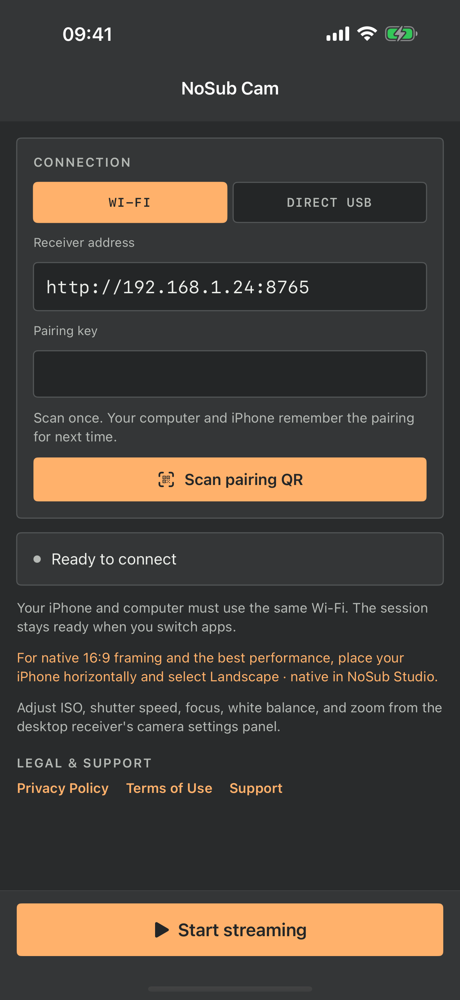
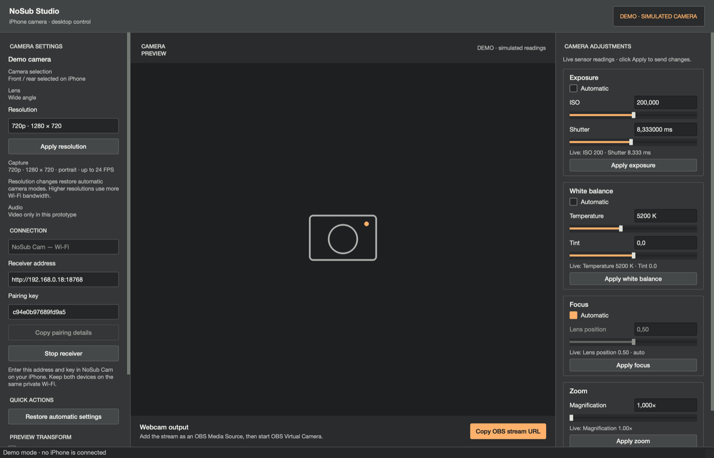

Open NoSub Studio
Choose Wi-Fi or Direct USB on your Mac or Windows PC and start the local receiver.
Turn your iPhone into a camera source for macOS and Windows. No account, cloud relay, advertising, analytics, or recurring fee.
Free companion apps · iOS 26+ · macOS and Windows receiver
NoSub Cam sends the image to the receiver you choose. The publisher does not operate a video relay, user account system, or recording service.
Choose Wi-Fi or Direct USB on your Mac or Windows PC and start the local receiver.
Enter the displayed receiver address and temporary pairing key in NoSub Cam.
Preview and adjust the camera, then route the stream through OBS Virtual Camera when another app needs it.
The iPhone app keeps setup compact: a 16:9 monitor, one connection panel, a clear status surface, and a single persistent streaming action.

The idle monitor uses the same camera symbol as NoSub Studio. The flat anthracite surfaces, compact corners, and warm orange controls carry one visual language across both devices.
Camera selection, resolution, pairing, live preview, exposure, focus, white balance, and zoom share one compact desktop workspace.

The product is intentionally small: two companion apps that connect devices you already own.
Use a trusted local Wi-Fi network or connect through Apple's local USB device service.
Adjust supported ISO, shutter, focus, white balance, zoom, and capture resolution from the desktop.
Select the camera on your iPhone and use the supported modes reported by the device.
No developer-operated backend, advertising network, analytics SDK, or subscription system.
Wi-Fi mode uses unencrypted HTTP on your local network. Use a private network you trust, protect pairing details, and never expose the receiver port to the public internet.
Install NoSub Cam on iPhone and NoSub Studio on the receiving computer.